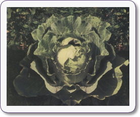
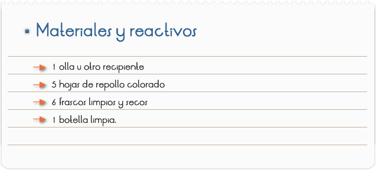
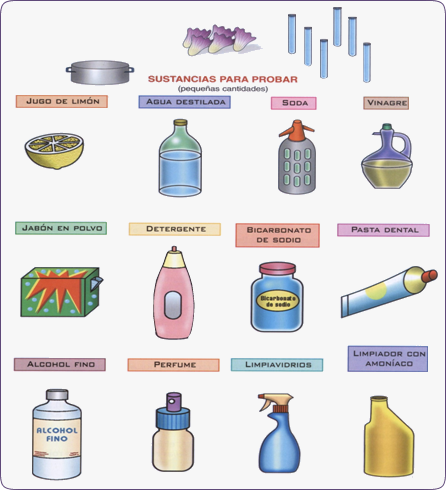
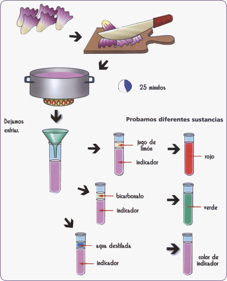
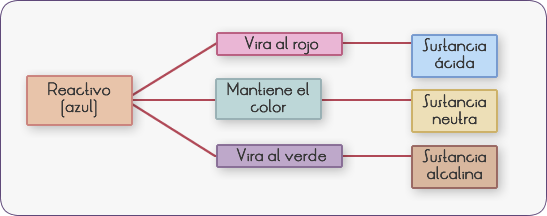
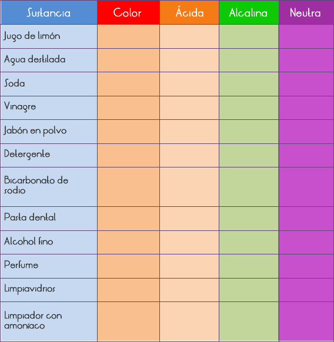

Introducción
¿QUÉ ES UNA COL?
Las coles son hierbas bianuales (viven dos años). Son propias de las regiones templadas. Sirven de alimento a numerosas personas y además se usan como forraje para los animales. Tiene un tallo corto, y un conjunto de hojas apretadas, con forma circular u ovalada. Éstas pueden ser lisas o rugosas, y presentar distintos colores, como blancuzco, verde o púrpura. Hay coles muy conocidas, como la col de Bruselas, el brócoli y la coliflor. La col colorada de hojas rugosas tiene un pigmento que nos permitirá jugar como verdaderos químicos con distintas sustancias.

SUSTANCIAS ÁCIDAS, NEUTRAS y ALCALINAS.
El agua es la sustancia mas difundida en la naturaleza. Está compuesta por dos átomos de hidrógeno y un átomo de oxígeno.
El agua pura, a 22 oC de temperatura, se encuentra disociada en partes iguales de iones o partículas con carga eléctrica positiva y negativa. Los iones con carga positiva se denominan protones H y los iones con carga negativa se denominan hidróxilos OH.
Cuando una sustancia se disuelve en agua y libera iones hidróxilos, se denomina sustancia básica o alcalina. En cambio, si libera protones, se denomina sustancia ácida.
La unión de una sustancia básica con una ácida produce una sustancia neutra.
¿CÓMO RECONOCEMOS ESAS SUBSTANCIAS?
Las substancias ácidas, alcalinas o neutras se reconocen por el uso de indicadores.
Un indicador es una sustancia química, natural o sintética, que cambia de color si está en un medio ácido o alcalino. Si se encuentra en un medio neutro no cambia de color.
Entre los indicadores mas conocidos se hallan el tornasol (tintura vegetal), que en un medio ácido toma un color rojo de metilo, la fenolftaleína o el azul de bromotinol.
También podemos utilizar como indicadores el té, el jugo de pomelo y los pigmentos de las flores como las violetas, las dalias rojas y las petunias rojas. Después de todas estas consideraciones…
Objetivo
Reconocer si una sustancia química es ácida, neutra o alcalina con ayuda de coles.


NUESTRO INDICADOR, EL JUGO DE UNA COL
Toma 4 ó 5 hojas de repollo o col púrpura. Córtalas en pequeños trozos y caliéntalos en agua, a fuego lento, durante 25 minutos. Luego, deja enfriar y guarda lo obtenido en una botella limpia. Ya tenemos nuestro indicador.

Agrega en el frasco un poco de la sustancia y, luego, una cantidad igual del indicador. Observa qué color tomó.

Sino tienes tantos frascos, realiza la prueba con una sustancia, lava el frasco y repítela con una nueva sustancia.
Registra los datos en el siguiente cuadro:
